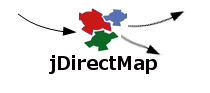

About Project
Plan
Resources
Demo
Smooks Direct Mapping
There are currently three versions of the jQuery Tree plug-in implementations supporting multi-tree with drag and drop functionalities. The grid functionality is implemented by jqGrid plug-in.